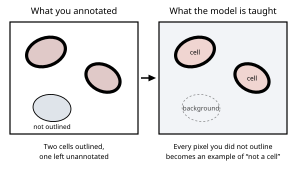
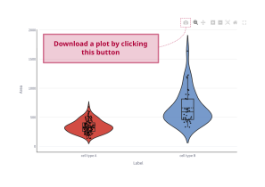
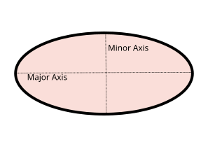
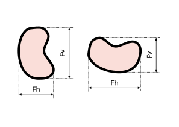
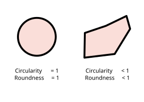
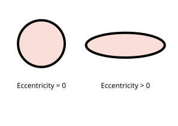
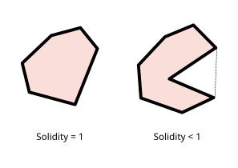
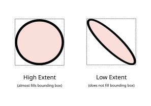

Cellpose is a deep-learning model purpose-built for biological cell and nucleus segmentation. Rather than predicting a simple foreground/background mask, it learns to predict gradient flows - vectors that point from every pixel toward the center of the nearest cell. A simple post-processing step then follows those gradients to group pixels into individual cell instances, making it remarkably robust to cells of different sizes, shapes, and imaging conditions.
Cellpose is pre-trained on a large, diverse collection of microscopy images and generalises well out of the box. When your images differ significantly from the training data (unusual stains, atypical morphology, low magnification), fine-tuning on a small set of your own annotated images - which Mycol supports directly - can dramatically improve results.
Versions used in Mycol
- Cellpose 2 introduced a human-in-the-loop training workflow, allowing users to correct segmentation errors and immediately improve the model with very few additional annotations. Read the Cellpose 2 paper (Nature Methods, 2022) →
- Cellpose 3 added image restoration capabilities (denoising, deblurring, and upsampling) so that segmentation quality is maintained even on noisy or low-resolution data. Read the Cellpose 3 paper (Nature Methods, 2024) →
Official website and documentation: cellpose.org
DenseNet (Densely Connected Convolutional Network) is a convolutional neural network architecture designed for image classification. Its key idea is that every layer is directly connected to every other layer within a dense block: the input to each layer is the concatenation of the feature maps from all preceding layers, not just the previous one.
This dense connectivity has two practical benefits:
- Feature reuse - early low-level features (edges, textures) remain accessible to later layers without having to be re-learned, so the network extracts richer representations with fewer parameters.
- Gradient flow - during training, gradients can travel directly from the loss back to the earliest layers, which prevents the “vanishing gradient” problem and makes training more stable, especially on small datasets.
In Mycol, DenseNet is applied at the individual cell level: each segmented cell patch is classified into one of your user-defined classes. The model is either used with a pre-trained checkpoint you upload, or fine-tuned from scratch on your own annotated cell patches.
Original paper: Huang et al., Densely Connected Convolutional Networks, CVPR 2017. Read the paper →
When Mycol measures a cell - its area, perimeter, diameter, and so on - the raw number is always in pixels, because that is what the image is made of. A pixel has no inherent physical size; it depends entirely on your microscope’s magnification and camera settings.
The pixel-to-distance (px → µm) conversion lets you express measurements in real-world units by supplying a single number: how many micrometres one pixel represents in your images (the pixel size or image scale, often found in your microscope software or image metadata).
For example:
- If 1 pixel = 0.5 µm and a cell has an area of 400 px², its physical area is 400 × 0.5² = 100 µm².
- Linear measurements (perimeter, diameter) scale by the factor directly: 40 px × 0.5 = 20 µm.
If no conversion factor is provided, Mycol simply reports all measurements in pixels. You can still compare cells within the same experiment, but cross-experiment or publication comparisons require consistent physical units.
How to find your pixel size: check the metadata embedded in the image file (e.g. the TIFF tags), your microscope acquisition software, or ask your facility’s imaging staff for the calibration value at the magnification you used.
SAM2 (Segment Anything Model 2) is a general-purpose segmentation model developed by Meta AI. Unlike Cellpose, which was trained specifically on microscopy images, SAM2 was trained on an enormous and diverse collection of natural images and videos. Its strength is promptable segmentation: given a point, bounding box, or rough outline supplied by the user, SAM2 predicts a precise mask for the object at that location.
In Mycol, SAM2 is used as an interactive segmentation tool. Instead of running fully automatically across the whole image, you highlight a cell with a box and SAM2 will generate a high-quality mask for that cell. This makes it especially useful for:
- Segmenting unusual cell types or objects where Cellpose may struggle.
- Quickly annotating small numbers of cells for a training set without running a full automatic pass.
Because SAM2 relies on your prompt rather than learning from your specific image type, it does not need to be fine-tuned - it works out of the box. However, for fully automatic, hands-off segmentation of large image sets, a trained Cellpose model will generally be faster and more consistent.
Learn more about SAM2: ai.meta.com/sam2
Images (required)
The microscopy or sample images you want to analyse. Standard formats such as TIFF, PNG, and JPEG are supported. Every other file type is optional and supplementary - images are the only thing you must upload to start working. Without an associated image, a mask will not be recognised when uploaded.
Masks (optional)
Segmentation masks that outline the cells or regions of interest in your images. Each mask is a labelled image where every cell is represented by a unique integer ID, and background pixels are zero. Uploading existing masks lets you skip the automatic segmentation step and jump straight to classification or analysis, or to continue refining masks you created in a previous session. You can upload the Cellpose .npy format or a tiff where each cell is a different integer value.
Cellpose inference hyperparameters CSV (optional)
A small two-column parameter,value file listing the Cellpose inference
settings - diameter, cell-probability threshold, flow threshold, minimum size,
and number of iterations. These significantly affect segmentation, so uploading the
cellpose_inference_hyperparameters.csv (found in a downloaded model or a
saved-session zip) automatically applies those settings on the Annotation page,
letting you reproduce a previous segmentation without re-entering each value by hand.
Saved Session (optional)
A zip archive produced by the Session Restore download option. Uploading it reloads a previous Mycol session in full: all images, masks, class labels, trained models, and settings are restored exactly as they were when the session was saved. This is the recommended way to pause and resume long annotation or training projects, or to share a complete working state with a collaborator.
You do not need a machine learning background to train useful models in Mycol. The guidelines below cover the most impactful things you can do to get good results.
Start with the pre-trained model
Before training anything, run the default Cellpose or DenseNet model on a few images. Often the out-of-the-box result is already good enough, or needs only minor corrections. Training is worth the effort only when automatic results are consistently poor.
Data quality beats data quantity
A small set of carefully checked annotations is almost always better than a large set of sloppy ones. For Cellpose, 10–30 well-corrected images are usually enough to see a meaningful improvement. For DenseNet classification, aim for at least 50–100 annotated cells per class, and ensure the classes are balanced (similar numbers per class).
Cover the diversity in your data
Training images should represent the full range of conditions you will encounter: different brightness levels, focal planes, cell densities, and edge cases. A model trained only on the “easy” images will struggle with the harder ones. This matters more than almost anything else - see why models fail on images that look obvious to you.
Watch the loss curves
After training, Mycol shows a plot of how the model’s error (the “loss”) decreased over each training epoch. A healthy training run shows both the training loss and the validation loss falling steadily and then levelling off close together. If the validation loss starts rising while the training loss keeps falling, the model is overfitting - it is memorising your training data rather than learning general patterns. In that case, stop training earlier (fewer epochs) or add more diverse training images.
Iterate in small steps
Train a model, test it on new images, correct the errors, add those corrected images back to your training set, and re-train. This cycle of annotate → train → correct → repeat is the most efficient way to improve a model without needing thousands of images up front.
DenseNet tip: DenseNet classifies individual cell patches, so the quality of your segmentation masks directly affects classification accuracy. Fix obvious segmentation errors (merged cells, background fragments) before training a classifier.
A trained model is not a program that understands cells. It is a statistical mapping, fitted to the exact examples you gave it, from patterns of pixels to an output. It has no concept of what a cell is. Nearly every disappointing result traces back to the same root cause: the images or the labels used for training did not match what the model was later asked to do. The sections below cover the ways that happens, and how to avoid them.
A model learns to be good at exactly what you trained it on
When you look at a dim, oddly lit image and still see the cells instantly, you are using knowledge the model does not have. All the model learned was which pixel patterns earned a reward on your training images. Change those patterns - even in ways you would not consciously notice - and it is being asked to extrapolate into territory it has never seen. It has no fallback of “well, obviously that is a cell.”
This is why a model that worked perfectly last week can fail on today’s plate while the task looks completely unchanged to you. The task is unchanged; the input statistics moved.
What counts as a “different” image
Far more than most people expect. Any of the following can be enough to degrade a model, even when the biology and the question are identical:
- Lighting and exposure - a different lamp setting, a change in illumination angle, ambient room light, or automatic white balance on the camera.
- A different microscope, camera, or objective - even two instruments of the same model can differ enough to matter.
- Magnification and pixel size - a cell 30 px across is a different object to the model than the same cell at 90 px. For Cellpose this also means the diameter setting used at inference has to match what the model was trained for.
- Focus, motion blur, and noise levels.
- Background - a different agar or medium colour, a different plate or slide, condensation, scratches, or a clean background where training images had a textured one.
- Stain, channel, or contrast method.
- The sample itself - a new strain, a different growth stage, higher density, or colonies touching where training images had isolated ones.
- File handling - JPEG compression artefacts, 16-bit versus 8-bit, resizing or downscaling, or a different export pipeline from the acquisition software.
There are only two real fixes: standardise acquisition so every image resembles the training set, or add a handful of images from each new condition to the training set and re-train. The second is usually what you want - one model trained across three lighting setups is far more useful than three models each trained on one.
Augmentation helps, but it cannot invent data
During training, Mycol shows the model randomly altered copies of your examples - mirrored, slightly rotated, and slightly varied in brightness, contrast, and sharpness. This is called augmentation, and it buys some tolerance for free: you do not need to worry about which way round your cells happen to lie, or about small exposure differences between images.
What augmentation cannot do is invent data. It only perturbs the examples you supplied, so it will never conjure up a lighting rig, a magnification, or a morphology you never imaged. Genuine diversity in the training set is what buys generalisation; augmentation just smooths the edges of it.
When training Cellpose, outline every cell in the image
This is the single most common annotation mistake, and it is easy to make because nothing warns you about it. Cellpose trains on the whole image. Anything not inside an outline is not treated as “unknown” or “skipped” - it is an explicit example of background. A cell you did not get around to outlining is therefore active training data teaching the model that things which look like that are not cells.

Segmentation training has no “unlabelled” category. A cell left without an outline is not ignored - it teaches the model that such cells are background.
In practice this means:
- Skipping the faint, small, clumped, or unusual cells teaches the model to ignore exactly those cells - the hard cases you most wanted help with. The easy ones it could probably already find.
- A half-annotated dense image is worse than no image at all: every cell left unoutlined contributes a wrong signal, and dense images contain many of them.
- Be consistent about cells cut off at the image border. Decide a rule - always outline partial cells, or always leave them - and apply it to every image. Doing it both ways teaches the model that such objects are sometimes cells and sometimes not, and it will hedge accordingly.
Rule of thumb: ten fully annotated images beat fifty partly annotated ones. If an image is too dense to finish, crop a region you can annotate completely and train on that instead. Mycol’s min cells per image setting (default 5) drops near-empty images from training, but do not rely on it to catch partial annotations - an image with twenty of its forty cells outlined passes that filter easily.
Classification labels behave differently - partial is fine, inconsistent is not
DenseNet classifies individual cell patches, so a cell you never assigned a class to is simply left out of the training set. It is not taught as a wrong answer. Partial labelling is therefore safe for classification, unlike segmentation, and you can label as many or as few cells as you have patience for.
What does hurt is inconsistency. If you call borderline cells one thing at the start of a session and the opposite thing two hours later, or two people apply subtly different criteria, the model receives contradictory examples of the same appearance and learns the boundary between your classes as noise. Write down your criteria for the ambiguous cases before you start, and treat “I cannot tell” as a legitimate answer - leaving a cell unlabelled is much better than guessing.
Watch out for imbalanced classes
If 95% of your labelled cells are “normal” and 5% are “abnormal”, a model that answers “normal” for every single cell scores 95% accuracy while being completely useless. A headline accuracy figure hides this entirely.
After training, read the confusion matrix rather than the accuracy figure. Each row shows what actually happened to the cells of one class, so a rare class the model never predicts shows up immediately as a row whose counts have all drifted into the wrong column. The macro-averaged precision, recall, and F1 that Mycol reports alongside it also help, because they weight every class equally rather than by how many cells it has. Aim for a roughly similar number of labelled cells per class; if the interesting class genuinely is rare, deliberately go and find more examples of it to label, and judge the model on how it handles that class.
Good numbers on your own data are not proof that it works
During training, part of your data is held back as a validation set and the reported scores are measured on it. That is a real check that the model has not simply memorised its training examples - but it is a weak one, because the held-back data came from the same session, the same plates, and the same imaging setup as everything else. It tells you the model generalises to more of the same. It does not tell you it will generalise to next month’s plates.
The only test that counts is running the model on a fresh batch of images it has never seen - ideally acquired on a different day, ideally by a different person - and looking at the output yourself. Set a few such images aside at the very beginning and never train on them.
Beware repeated tuning, too. If you re-train several times with different settings and keep whichever version scored best, you have quietly started fitting to the validation set as well. The more times you consult that number to make a decision, the less it means.
More images only help if they are different images
Two hundred fields from one plate on one afternoon are, as far as the model is concerned, close to a single image repeated two hundred times. They mostly make training slower. Twenty images spanning three lighting conditions, two magnifications, and a range of cell densities teach far more.
When choosing what to annotate next, the most informative images are the ones your current model gets wrong. Run it, find the failures, correct those, and add them - the annotate → train → correct → repeat cycle is efficient precisely because it keeps steering your training set towards what the model still lacks.
Before trusting a model, check: does the training set contain examples of every condition you intend to run it on? Is every cell outlined in every Cellpose training image? Are the class labels consistent and roughly balanced? Has it been tested on images from a different day that were never used in training? A “no” to any of these predicts the direction in which the model will fail.
For every segmented cell, Mycol computes a set of shape descriptors from the mask region.
All values are reported in pixels unless a pixel-to-distance conversion factor is supplied.
Descriptors are computed using
skimage.measure.regionprops
from the scikit-image library.
Notation used below:
- A - area (number of pixels inside the cell mask)
- P - perimeter (length of the cell boundary)
- a, b - semi-major and semi-minor axes of the best-fit ellipse

What it describes: The size of the cell in pixels.
What it describes: The length of the cell’s boundary.
What it describes: The longest (major) and shortest (minor) diameters of the best-fit ellipse. Larger major-axis values relative to cell size indicate a more elongated cell.

The major axis is the longest diameter of the best-fit ellipse; the minor axis is the shortest diameter perpendicular to it.
What it describes: The largest distance between any two points on the cell’s boundary, as if measured with callipers. Unlike the major axis length it assumes no particular shape, so it is the more reliable size measure for irregular or bent cells.

A calliper reading depends on the direction it is taken in: Fh across and Fv down. Turning the same cell changes both. Mycol reports the maximum Feret diameter, the largest reading over every direction, so it does not depend on how the cell lies.
What it describes: Two related measures of how circle-like and compact a shape is. Both are close to 1 for near-circular cells and decrease with elongation or irregular boundaries.

For the same area A, shapes with longer perimeters P have lower circularity and roundness.
What it describes: How stretched the best-fit ellipse is, from 0 to 1. A value of 0 is a perfect circle; values approaching 1 are increasingly elongated. It compares the two axes, so it does not change with the size of the cell.

As the major axis grows relative to the minor axis, eccentricity rises from 0 towards 1.
What it describes: How filled the cell is relative to its convex hull. A value of 1 indicates a perfectly convex shape; lower values indicate concavities or irregular boundaries.

A convex shape matches its convex hull (solidity ≈ 1). Indentations or irregular boundaries reduce area relative to the hull, lowering solidity.
What it describes: The fraction of the bounding box area occupied by the cell. Values near 1 indicate the cell nearly fills its bounding box.

Extent measures how much of the bounding box the cell occupies. Thin or irregular cells leave more empty space in their bounding box and have lower extent values.